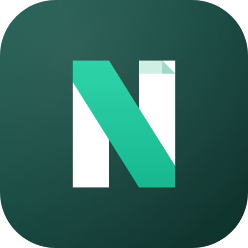

NOVA DocsTerms of use
NOVA Docs is licensed, not sold, under Apple’s Standard Licensed Application End User License Agreement (EULA).
NOVA Pro is a one-time, non-consumable in-app purchase that unlocks the pro features on the devices using the same Apple ID. It can be restored at any time with “Restore purchases”. Refunds are handled by Apple.
You are responsible for the content of the documents and invoices you create, including tax and legal requirements in your country.
Editing adds layers on top of PDF pages; existing text is covered and replaced visually, not rewritten inside the original file.
The app is provided “as is”. Keep backups of important documents.
Conditions d’utilisation
NOVA Docs est concédé sous licence, et non vendu, selon le contrat de licence standard d’Apple (EULA).
NOVA Pro est un achat intégré unique (non consommable) qui débloque les fonctions pro sur les appareils utilisant le même identifiant Apple. Il peut être restauré à tout moment. Les remboursements sont gérés par Apple.
Vous êtes responsable du contenu des documents et factures que vous créez, y compris des obligations fiscales et légales de votre pays.
L’édition ajoute des calques sur les pages : le texte existant est masqué et remplacé visuellement, pas réécrit dans le fichier d’origine.
L’app est fournie « en l’état ». Conservez des sauvegardes de vos documents importants.
شروط الاستخدام
يُرخَّص NOVA Docs ولا يُباع، وفق اتفاقية ترخيص المستخدم النهائي القياسية من Apple (EULA).
NOVA Pro شراء داخل التطبيق لمرة واحدة (غير قابل للاستهلاك) يفتح الميزات الاحترافية على الأجهزة التي تستخدم حساب Apple نفسه، ويمكن استعادته في أي وقت عبر «استعادة المشتريات». تتولى Apple طلبات الاسترداد.
أنت مسؤول عن محتوى المستندات والفواتير التي تنشئها، بما في ذلك المتطلبات الضريبية والقانونية في بلدك.
التحرير يضيف طبقات فوق صفحات PDF: النص الموجود يُغطّى ويُستبدل بصريًا ولا يُعاد كتابته داخل الملف الأصلي.
يُقدَّم التطبيق «كما هو». احتفظ بنسخ احتياطية لمستنداتك المهمة.
Last updated: 2026-11-17 · NOVA Docs: PDF & Invoices 1.0.0